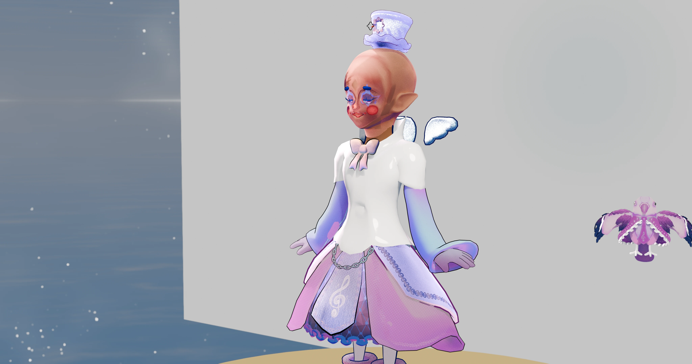
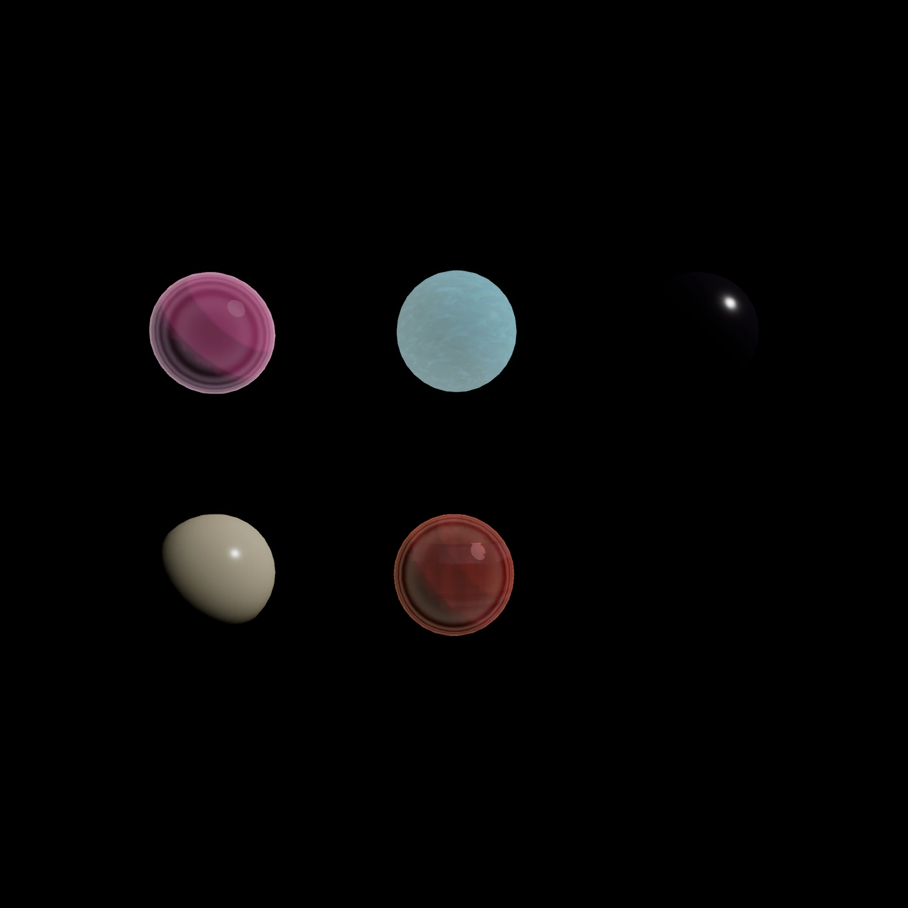

Character · Lookdev · Melusina
Melusina, dressed in light.
The character at the center of Melodia — Shorewake dress, iridescent organza, porcelain skin. Built in Unreal Engine 5.8, graded through the TouchDesigner realtime lookdev hub. This page is the proof, not the pitch.
Asset Passport
Melusina · Specs
Character lookdev: modular garment assembly, Substrate Toon materials, and the TD hub that grades it.
48
Materials
2K
Turntable
UE 5.8
Engine
TD
Realtime Hub
Blender
Modeling
ZBrush
Sculpt
Technical Breakdown
Surface, not just shape.
Hero renders with material isolates and the TD lookdev solo passes that prove the shader stack.

4K master · full Nikki-grade wardrobe

2K turntable · Shorewake dress assembly

Material isolate · iridescence + satin sheen
What I did
The work behind the image.
- — Modeled and sculpted Melusina in Blender + ZBrush; assembled the 48-material Shorewake garment set.
- — Authored Substrate Toon materials: iridescent thin-film, anisotropic silk sheen, porcelain SSS skin.
- — Built the TD realtime lookdev hub: A/B wipe, quad-split, solo pass inspection, false-color IRE.
- — Graded through the Nikki × ATLUS palette with the Nikki LUT and 5-mode dither.
- — Captured 29 curated plates (PNG + WebP + 800px thumbs) for the portfolio.
Recruiter contact
Want the files behind this?
I'm open to environment and technical art roles. Email me and I'll send the breakdown, the .tox, or the UE project.
Email Brennan